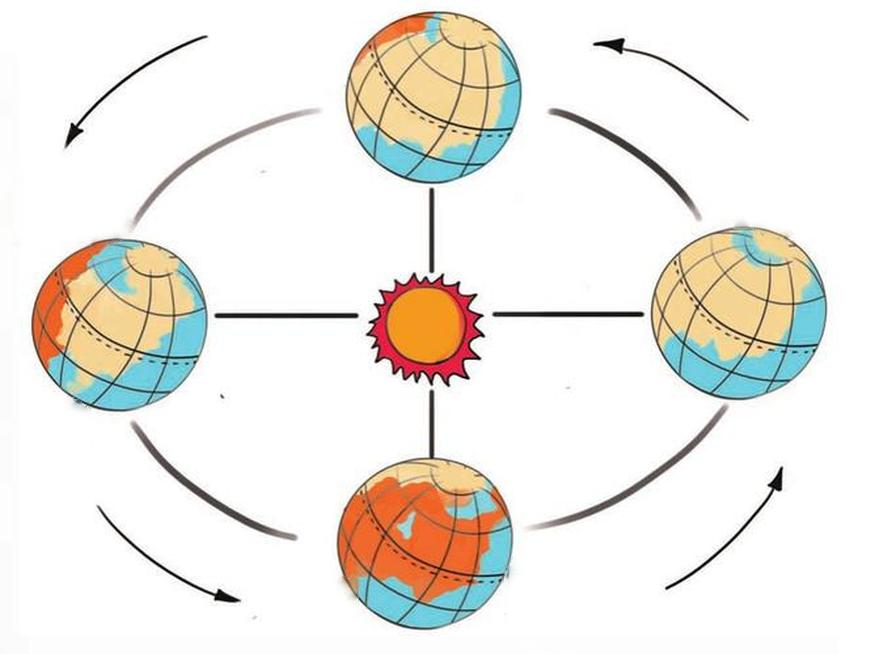
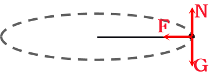
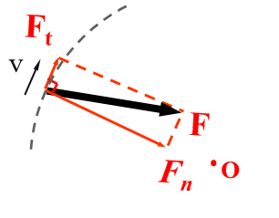
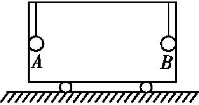
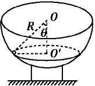

匀速圆周运动的向心力
- 定义：做匀速圆周运动的物体所受的合力总是指向圆心，这个指向圆心的力就叫作向心力。
- 方向：向心力总是沿半径指向圆心（与线速度方向垂直）。由于方向时刻改变，所以向心力是变力。
- 作用效果：向心力只改变速度的方向，不改变速度的大小。
- 来源：向心力可以由某个力或者几个力的合力提供，也可由某个力的分力提供。向心力是根据力的作用效果命名的。

Note
向心力是效果力，“物体受到向心力的作用”这种表述是不合适的，应改成“物体的向心力由某某力提供”；
中学阶段没有离心力这种表述。
探究向心力大小的表达式
- 探究装置
- 探究方法：控制变量
- 结论：
F_{n}=m\omega^{2}r
F_{n}=m \frac{v^{2}}{r}
| 提供 > 需要 | 提供 = 需要 | 提供 < 需要 |
|---|---|---|
| 向心/近心运动 | 圆周运动 | 离心运动 |
变速圆周运动
 合外力全部提供向心力
 合外力部分提供向心力
找两张更美观的图
补充知识
在 F_{n} 和 F_{t} 中，t 是切向 tangent 的首字母，n 是法向（垂直） normal 的首字母。
一般曲线运动的研究方法
课堂练习
- 做圆周运动的物体受到的向心力是该物体所受的合外力
- 向心力是指向圆心方向的合力，是根据力的作用效果命名的
- 向心力可以是重力、弹力、摩擦力等各种力的合力，也可以是其中一种力或一种力的分力
- 向心力只改变物体运动的方向，不可能改变物体运动的快慢
- 一小球被轻绳悬挂在竖直面内做圆周运动，其所受向心力为重力和绳子拉力的合力
如图所示, 将完全相同的两小球 B、A 用长 L=0.8 m 的细绳悬于以 v= 4 m / s 向右匀速运动的小车顶部, 两球分别与小车前后壁接触. 由于某种原因, 小车突然停止运动, 求此时悬线的拉力之比 F_{B}∶F_{A} ？(取 g=10 m / s^{2})

如图所示, 有一质量为 m 的小球在光滑的半球形碗内做匀速圆周运动, 轨道平面在水平面内. 已知小球与半球形碗的球心 O 的连线跟竖直方向的夹角为θ, 半球形碗的半径为 R, 求小球做圆周运动的速度大小及碗壁对小球的弹力大小。
